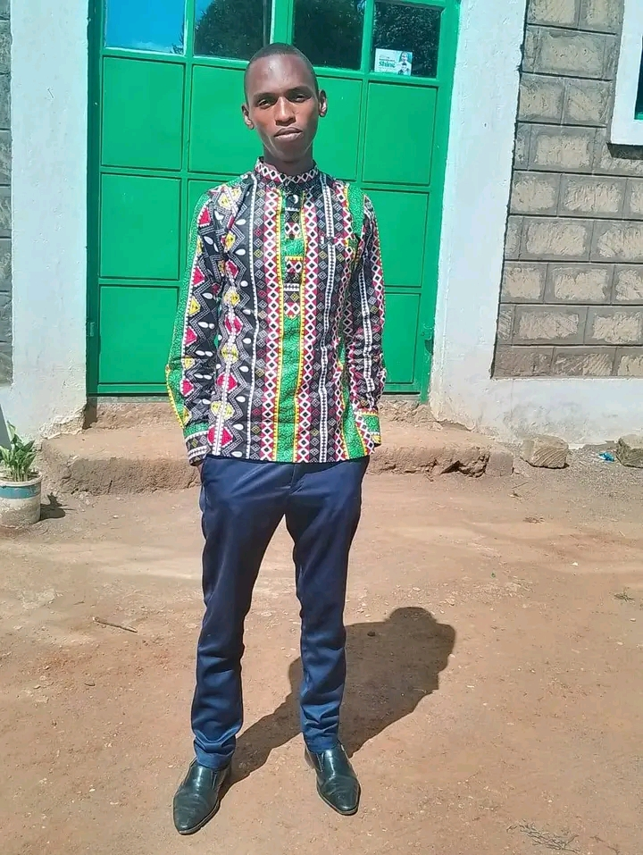

Our Mission
1.To accomplish holiness which will be our life style.
2.We will plant churches on every street,in every city,town and community in all nations of the world.
3.We will pursue these objectives untill all nations of the world are reached for Jesus Christ.
Our Vision
"Vision in the RCCG is the direction of where we are going"
1.To make heaven.2.To take as many people as possible with us.
3.To have a member of RCCG in everyfamily of all nations.
Our Motto
"Jesus Christ the same yestaday,and today,and for ever."
HEBREWS 13:8(KJV)
Our Core Values
CORPORATE CODE OF ETHICS
Philippians 4:8-9.(H.A.R.S)1.Holiness:Integrity,Obedience,Transparency:james 3:17-18;1 Thesalonians 4:1-8.
2.Accountability:Responsibility:Luke 19:15;James 1:13-15;2 Samuel 12:1-15
3.Resourcefullness:Fruitfulness,Diligence:Job 6:13;Psalm 108:12
4.Sacrifice:Faithfulness,Hardwork:1 John
Our Story
RCCG Lion Of Judah began in 2010 with a small group of believers meeting in a living room. Over the years, God has blessed our congregation with growth, impacting hundreds of lives in our city and beyond. Today, we are a thriving community of faith committed to worship, fellowship, discipleship, and outreach.
Meet Our Leadership
Pastor Philip Akharia
Senior Pastor

Sammy Kabingwa
Assistant Pastor

Nelson Njoroge
Youth Pastor